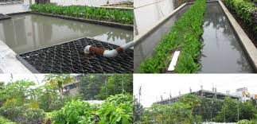
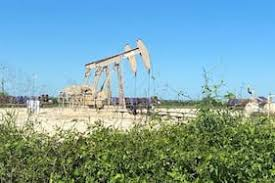

The Vazir Sultan Company Limited was incorporated on 10th November, 1930, under the Hyderabad Companies Act No. IV of 1320 Fasli and now governed under the Companies Act, 1956/2013. The name
of the Company was subsequently changed to VST Industries Limited on 30th April, 1983. The Company has its Registered Office at Azamabad, Hyderabad.
The Company's shares are listed on BSE Limited and National Stock Exchange of India Limited.
The Company has a manufacturing facility at Hyderabad and Toopran (Telangana).

Kedia Natural Vanaspati Limited is a Public Company incorporated on 20 July 1971. It is classified as Indian Non-Government Company and is registered at Registrar of Companies,
Hyderabad. It is involved inProduction, processing and preservation of meat, fish, fruits and vegetables, oils and fats.
It was promoted by the Kediya Group for the manufacture & supply of cotton seeds, groundnut, soyabean, rape-seed, industrial vanaspathi and sunflower seed refined oils.
In,2011-Company has changed its name from Kedia Vanaspati Ltd. to Natural Vanaspati Ltd.
The study aimed at evaluating the combined risk potential of various industrial and natural factors at micro level in the municipal wards of Hyderabad (include 150 wards and 3 other administrative areas), which is the capital of the state of Telangana, India. High resolution imagery was used to precisely map the locations of different categories of industries (chemical, manufacturing and mining) and influence of natural factors (earth quakes, cyclones, floods, landslides and fire) across the Hyderabad city, whereas the GIS technology was used for the integrated assessment of all the spatial information layers thus extracted. Analytical Hierarchy Processing (AHP) multi-criteria modeling technique was used for the overall assessment and mapping of the risk potential comprehensively at the municipal ward level. The results indicate that majority of the wards overing an area of 676.23 km are susceptible to industrial risk, therefore categorized as Poor and Very Poor. In terms of the natural risk,flood is found to be the most disastrous event which has high influence. Evaluation of combined risk due to natural factors indicate that out of total 153 ward areas 108 wards covering 620.08 km are found with very low risk and rated as Excellent.Only 17 wards are found with high risk potential, therefore rated as Very Poor and 10 wards as Poor, which are mostly confined to the eastern and northern fringe parts of the city of Hyderabad.2019, Springer International Publishing AG, part of Springer Nature.